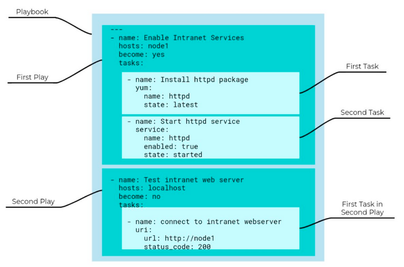

Ansible Playbooks and variables¶

A playbook is a YAML file that lists, in sequence, the operations to perform on a device or a group of devices. Each playbook is made of one or more plays, which can include pre_tasks, tasks, and post_tasks.

Variables play a crucial role when planning and writing playbooks. They can be defined at different levels: configuration, playbook, inventory, environment, files or facts. It is helpful to have a way to print the value of all the defined variables.
Let's start by opening the Cisco Legacy Core-Access topology lab and making sure that all devices are active and reachable.
Printing All Variables¶
As we know, a playbook is a YAML file containing a list of plays. Each play defines the operations to perform and where to run them:
#!/usr/bin/env ansible-playbook
- name: PRINT DEBUG VARIABLES
hosts: all
gather_facts: true
pre_tasks:
- ...
tasks:
- ...
post_tasks:
- ...
The example above defines a play with the general lists pre_tasks, tasks, and post_tasks. The play runs on all the inventory objects (all) and collects facts before running any task. Gathering facts can slow down the play, but it is essential for our purpose.
The first line, known as the "shebang", lets you run the playbook file directly, without specifying the ansible-playbook interpreter manually. As the names suggest, pre_tasks and post_tasks group the tasks that must run before all the others and just before the end of the play, respectively. In this example, we focus only on the tasks.
The targets of the playbook are defined by the hosts key, which can select all the hosts in the inventory (all), specific groups or individual hosts. Some examples:
all: selects all hosts in the inventory;r1.example.com: selects only R1;routers,switches: selects hosts in theroutersorswitchesgroups;routers,!switches: selects hosts in theroutersgroup but not in theswitchesgroup.
Now let's write a playbook that prints all the variables. The variables we want to print are grouped into:
- Module variables (
vars). - Environment variables (
environment). - Group names variables (
group_names). - Groups variables (
groups). - Host variables (
hostvars).
We define five tasks to print these variables:
#!/usr/bin/env ansible-playbook
- name: PRINT DEBUG VARIABLES
hosts: all
gather_facts: true
tasks:
- name: PRINT MODULE VARIABLES (vars)
tags: modules
ansible.builtin.debug:
msg: "{{ vars }}"
- name: PRINT ENVIRONMENT VARIABLES (environment)
tags: environment
ansible.builtin.debug:
msg: "{{ environment }}"
- name: PRINT GROUP NAMES VARIABLES (group_names)
tags: group_names
ansible.builtin.debug:
msg: "{{ group_names }}"
- name: PRINT GROUPS VARIABLES (groups)
tags: groups
ansible.builtin.debug:
msg: "{{ groups }}"
- name: PRINT HOST VARIABLES (hostvars)
tags: hosts
ansible.builtin.debug:
msg: "{{ hostvars }}"
Each task uses the ansible.builtin.debug module to print the msg parameter, set to the content of vars, environment, group_names, groups and hostvars.
If Ansible is correctly configured and the playbook is executable, running it is straightforward:
$ ./playbook-print_all_vars.yml
TASK [PRINT HOST VARIABLES (hostvars)] *****************************************
ok: [sw1.example.com] => {
"msg": {
"r1.example.com": {
"ansible_check_mode": false,
"ansible_config_file": "/home/dev/courses/Ansible/07. Playbooks/ansible.cfg",
"ansible_connection": "ansible.netcommon.network_cli",
"ansible_diff_mode": false,
"ansible_facts": {},
"ansible_forks": 5,
"ansible_host": "169.254.1.21",
"ansible_inventory_sources": [
"/home/dev/courses/Ansible/07. Playbooks/inventory.ini"
],
"ansible_network_os": "cisco.ios.ios",
"ansible_playbook_python": "/home/dev/venv/bin/python3.10",
"ansible_run_tags": [
"all"
],
"ansible_skip_tags": [],
"ansible_ssh_pass": "cisco",
"ansible_user": "admin",
"ansible_verbosity": 0,
"ansible_version": {
"full": "2.15.10",
The output shows many available variables but, for example, none containing the domain of the devices (example.com).
The facts include, for instance:
"ansible_net_hostname": "SW6",
"ansible_net_image": "unix:/opt/unetlab/addons/iol/bin/i86bi_linux_l2-adventerprisek9-ms.SS",
"ansible_net_iostype": "IOS",
"ansible_net_operatingmode": "autonomous",
"ansible_net_python_version": "3.10.13",
"ansible_net_serialnum": "73412614",
"ansible_net_system": "ios",
"ansible_net_version": "15.2(CML_NIGHTLY_20190423)FLO_DSGS7",
As we saw earlier, Ansible works differently when managing network devices (network_cli). Here the facts are gathered with the cisco.ios.ios_facts module, which depends on the ansible_network_os in use. If we switch to another device and module, the behavior might differ.
Limiting Execution¶
During development, and in general use, it helps to limit the execution to specific hosts or groups, and to particular parts of the playbook. Some examples:
./playbook-print_all_vars.yml --limit sw1.example.com
./playbook-print_all_vars.yml --limit switches
./playbook-print_all_vars.yml --limit 'switches,!sw1.example.com'
The three examples above run the playbook only on:
- The host
sw1.example.com. - Hosts in the
switchesgroup. - Hosts in the
switchesgroup, exceptsw1.example.com.
To limit the execution to parts of the playbook, we use tags. Tasks and roles can be associated with tags: if we assign a specific tag to each task, we can limit the execution to a single task:
There are also special tags:
always: tasks with this tag are always executed unless the--skip-tags alwaysparameter is specified.never: tasks with this tag are never executed unless the tag is explicitly specified (--tags never).
Configuring NTP with ios_ntp_global¶
Now that we have seen how to create a playbook, let's take it further and create our first role. A role is a reusable set of tasks that can be shared across playbooks. It has a specific structure and is typically stored in the roles directory. Roles are executed after pre_tasks but before tasks.
Let's create the skeleton for our first role, which will configure NTP on Cisco IOS devices:
The structure includes several directories that we will explore in later lessons. For now, we only need the tasks directory, which contains the list of operations to perform.
In this role we use ios_ntp_global and, before starting, we always read the official documentation. The examples show that the module configuration can become quite complex: we keep it simple and only configure two NTP peers.
Before developing the role, we need to decide how to model the variables used to configure the NTP peers. For simplicity, let's assume two variables holding the IP addresses of the two NTP peers: ntp_server_1 and ntp_server_2.
- name: CONFIGURE NTP PEERS
cisco.ios.ios_ntp_global:
config:
peers:
- peer: "{{ ntp_server_1 }}"
- peer: "{{ ntp_server_2 }}"
state: replaced
Next, we create a playbook that calls the role we just wrote:
#!/usr/bin/env ansible-playbook
- name: NTP PEERS
hosts: all
gather_facts: false
vars:
ntp_server_1: 194.239.208.213
ntp_server_2: 130.60.204.10
roles:
- role: cisco_ios_ntp
We run the playbook and check that the idempotence property is satisfied:
- The first run should configure (status
changed) the two IP addresses (verify withshow running-config | include ntp); - The second run should confirm what was done (status
ok); - If we change an IP address, the run should add the missing IP address and remove the one that is no longer needed (verify with
show running-config | include ntp).
The third point is not met. This happens because the module uses the merged state, which combines the current and the intended configuration. What we want requires the replaced or overridden state.
After modifying the role and testing again, it behaves as expected.
Saving the Configuration¶
By default, the Ansible modules for Cisco IOS do not save the configuration. Let's see how to save it easily and only when necessary. We again refer to the ios_config module and its official documentation: the save_when option can be used even without making any configuration change. We can either create a dedicated role or use post_tasks. We choose the latter, because saving the configuration is a task that ideally runs at the end of the play.
#!/usr/bin/env ansible-playbook
- name: NTP PEERS
hosts: all
gather_facts: false
vars:
ntp_server_1: 194.239.208.213
ntp_server_2: 130.60.204.10
roles:
- role: cisco_ios_ntp
post_tasks:
- name: SAVING CONFIG
tags: always
cisco.ios.ios_config:
save_when: modified
We also added the always tag, because we want the configuration to be saved every time.
Repeating the tests, everything now works as expected.
Ansible Galaxy and Collections¶
You might need modules that are provided by external collections, which can be managed with ansible-galaxy. For example, to list all the installed collections:
To update a specific collection:
It is good practice to track the collections you use, and their versions, in a collections/requirements.yml file:
You can install all the collections specified in the file with a single command:
Later, we will see how to create and publish your own collection on Ansible Galaxy.
The playbooks used in this article can be downloaded from GitHub.